Caso 022 · Jørn Utzon · 1973 · auditorio / ópera (gran equipamiento)
Dos piedras ciegas y, delante de ellas, la plaza donde la ciudad espera: un plano de acero a 14 m le da cubierta, deja entrar el sol bajo del invierno hasta el pie de la piedra y niega el de verano. Sintetiza el lugar (sol al norte, puerto al norte, lluvia y salinidad), el programa (4.492 personas que esperan, comen y entran a la vez), la composición (dos masas y un plano) y la construcción (hormigón con árido de arenisca para las salas, acero para el plano).
Latitud 33,86° S. Altura solar al mediodía: 32,7° (21 jun), 56,1° (equinoccio), 79,6° (21 dic); azimut 0° (norte).
Hormigón con árido de arenisca de Sídney en las piedras; pavimento de arenisca en la plaza; acero y vidrio en el plano y en las cajas del restaurante y el embarcadero.
Público al norte (sol y puerto) y en la plaza; artistas al sur de cada piedra, con pasillo de artistas, trasescenario y paso al escenario; servicio y carga al oeste (sala grande) y al este (sala pequeña) por calles de servicio propias; aparcamiento al sur con entrada desde Macquarie Street y zona de dejar y recoger.
| exigido | propuesto | cumple |
|---|---|---|
| Situación, plantas, secciones, alzados, memoria | U01, P01-P05, S01-S04, memoria | sí |
| Perspectiva de ambiente con figuras | V03 | sí |
| Detalle de un fragmento del exterior | V04 y D01 | sí |
| Plantas y secciones de las salas a escala propia | P04, P05 (1:250), S02 | sí (1:250: el formato no admite 1:200) |
| Sala grande 3.000-3.500 | 3.276 | sí |
| Sala pequeña ~1.200 | 1.216 | sí |
| Restaurante 250 comensales | 64 mesas, 256 | sí |
| Reuniones de 100 y 200 | 220 m² cada una | sí |
| Aparcamiento ~100 | 100 (96 + 4 accesibles, 97-100) | sí |
| Superficie construida (no fijada) | ≈ 22.500 m², 5,0 m²/plaza | desviación: por debajo de 8-12 m²/plaza; sin sótanos ni planta de talleres |
| No edificar en bordes este y oeste | 15 m libres | sí |
| Servicio y carga independientes | muelles oeste y este con calles propias | sí |
| NCC D2D8 (2 m + 0,5 m por 50 sobre 200) | SG platea 27 m (exigidos 21,5), SG balcón 12 m, SP platea 9 m, SP balcón 6 m, restaurante y reuniones 3,2 m | sí |
| NCC D4D10 (sillas de ruedas) | SG 41, SP 21 | sí |
| D4D3, D4D4 itinerario accesible | 140 m desde las plazas accesibles, 0 %, 1,80 m; ascensor en cada anillo | sí |
| Desnivel acumulado de salvaciones ≤ 3,6 m | ninguno: todo a nivel | sí |
| Sección J (energía) | cubierta con aislante de 100 mm; vidrio doble bajo emisivo | sin cálculo; se verifica en el proyecto de ejecución |
Cerchas de sala de 56 m (SG) y 30 m (SP) sobre muros de 0,6 m; plano de cercha de 1,8 m para luces de 22-24 m (canto ≈ luz/13); forjados de 0,4 m entre muros; pilares de tubo relleno Ø0,8 m con esbeltez 17,5 (péndulos); cimentación por losa y apoyos profundos. El viento horizontal se lleva a los muros de las piedras por el plano.
| elemento | material | acabado |
|---|---|---|
| Muros de las piedras | hormigón | árido de arenisca visto |
| Cubiertas de sala y de caja | hormigón | grava sobre aislante |
| Plano de cubierta | metal | acero pintado |
| Cajas del restaurante y del embarcadero | hormigón y vidrio | acero y vidrio |
| Tabiques | yeso | pintado |
| Suelos | baldosa | arenisca en la plaza |
Instalaciones del restaurante y de las salas en los anillos de las piedras y en la caja oeste; ascensor de servicio hasta la cocina; residuos y limpieza junto al muelle oeste. Aseos por sala grande: 48 de mujeres, 20 inodoros y 20 urinarios de hombres, 4 accesibles; sala pequeña igual; restaurante, reuniones y embarcadero, 4 + 1 por planta; artistas y personal con duchas.
D01 (1:20): fachada norte del restaurante de la cimentación a la cubierta: vidrio doble de 8+16+8 sobre montante de acero de 120 × 200; forjado de 0,4 m con baldosa de arenisca y aislante; cubierta de losa de 0,3 m, aislante de 100 mm, impermeabilización y grava.
Cfa: el plano da sombra de verano y cobijo de la lluvia; el sol de invierno entra por el norte; la brisa del nordeste ventila la plaza; las salas ciegas se acondicionan con aire.
Platea a nivel de la plaza; balcón por escaleras de 6,0 m (SG) y 3,0 m (SP) y ascensor en cada anillo. Recorridos medidos: platea SG ≈ 30 m, balcón ≈ 45 m, artistas ≈ 42 m. Plazas de silla de ruedas en platea.
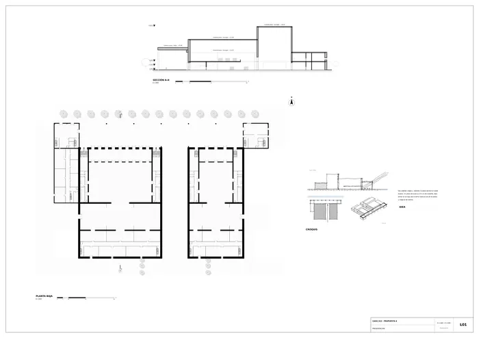
Presentación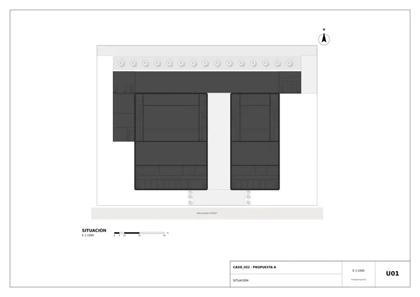
U01 · Situación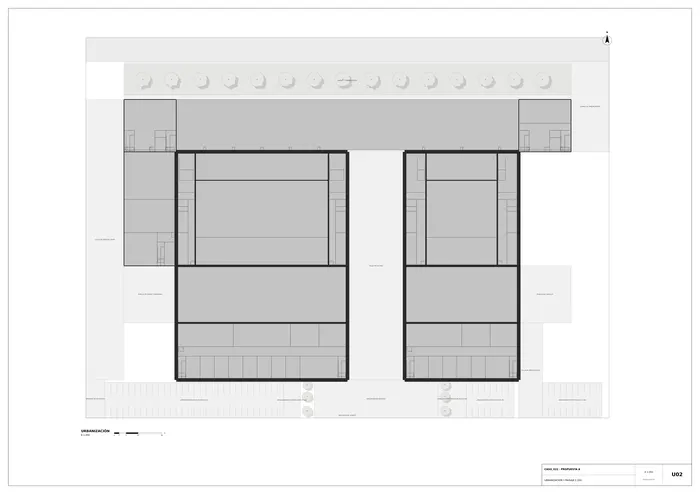
U02 · Urbanización y paisaje 1:350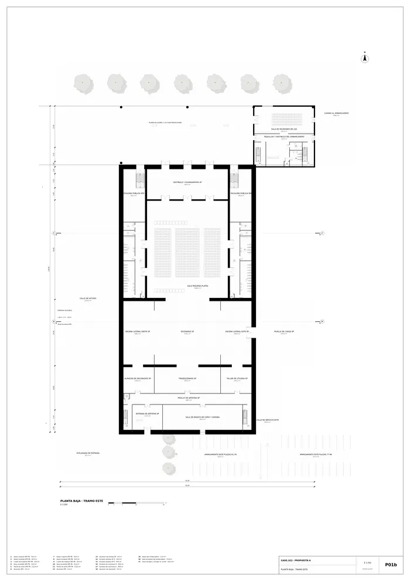
Planta baja · tramo este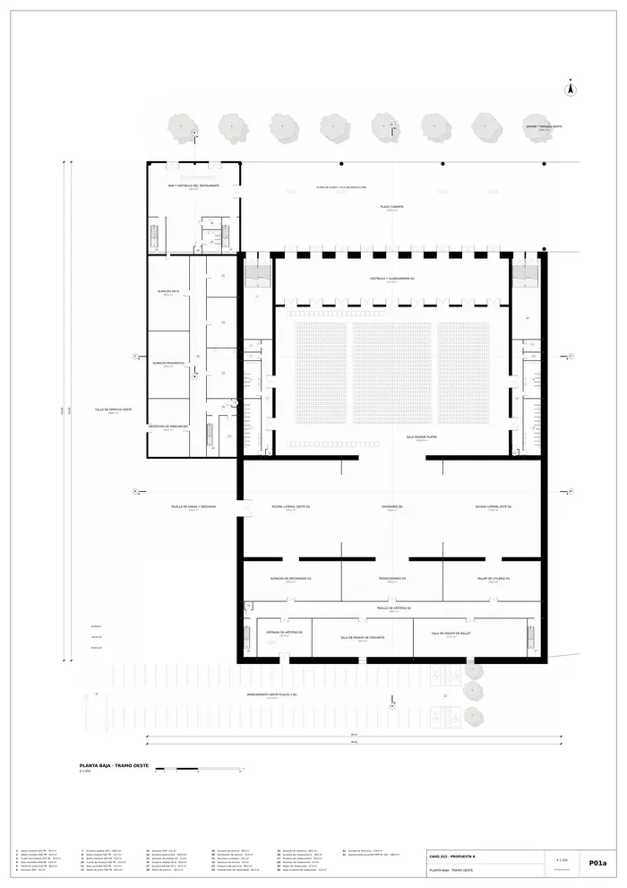
Planta baja · tramo oeste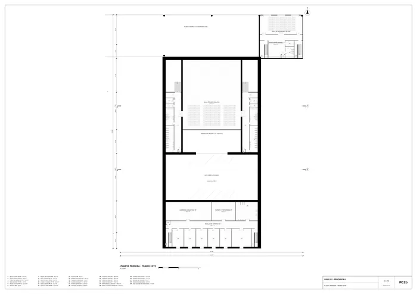
Planta primera · tramo este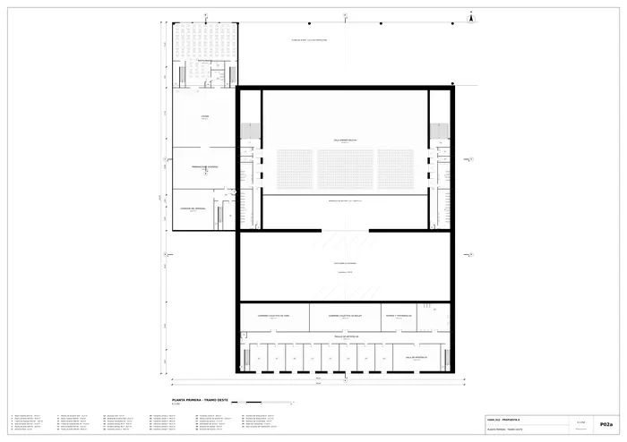
Planta primera · tramo oeste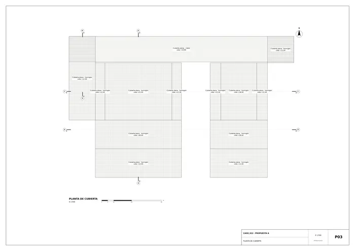
P03 · Planta de cubierta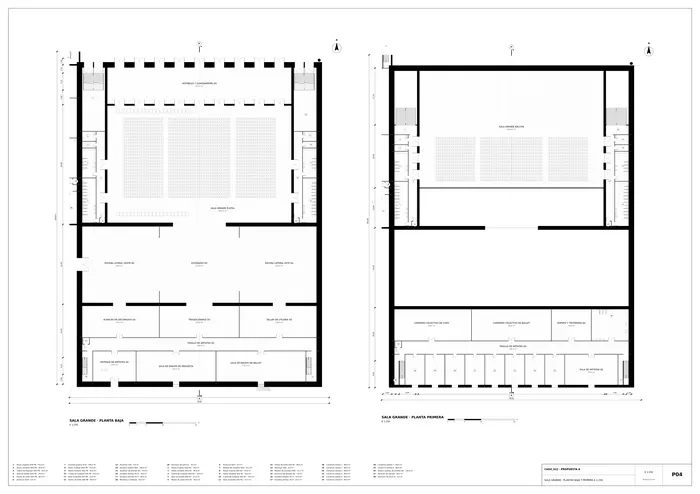
P04 · Sala grande · plantas baja y primera a 1:250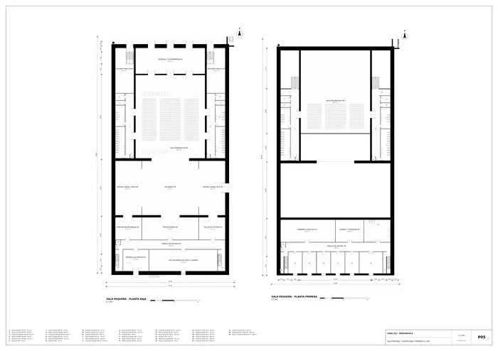
P05 · Sala pequeña · plantas baja y primera a 1:250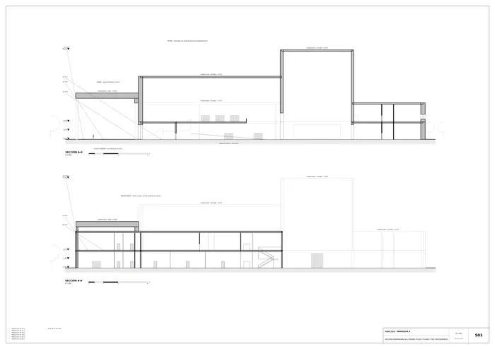
S01 · Sección generadora A-A (piedra, plaza y plano) y B-B (restaurante)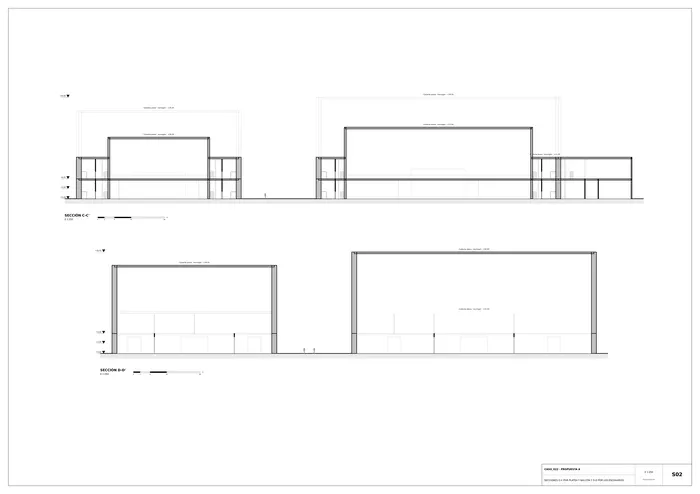
S02 · Secciones C-C por platea y balcón y D-D por los escenarios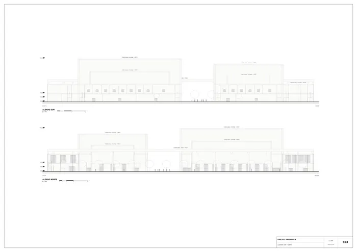
S03 · Alzados sur y norte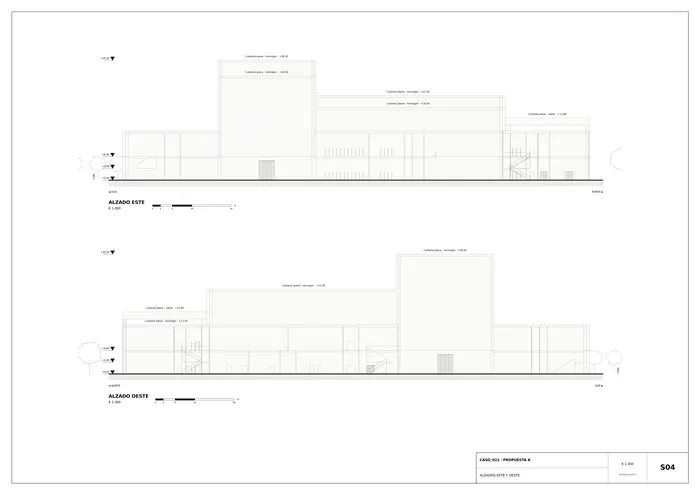
S04 · Alzados este y oeste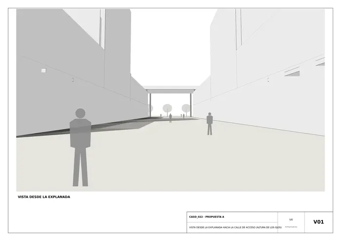
V01 · Vista desde la explanada hacia la calle de acceso (altura de los ojos)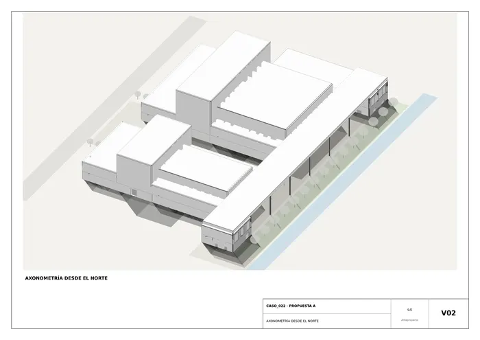
V02 · Axonometría desde el norte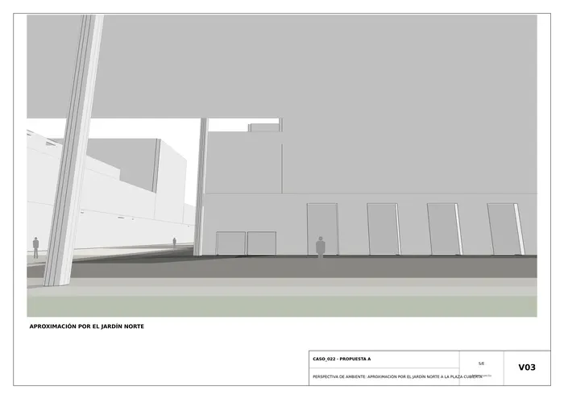
V03 · Perspectiva de ambiente: aproximación por el jardín norte a la plaza cubierta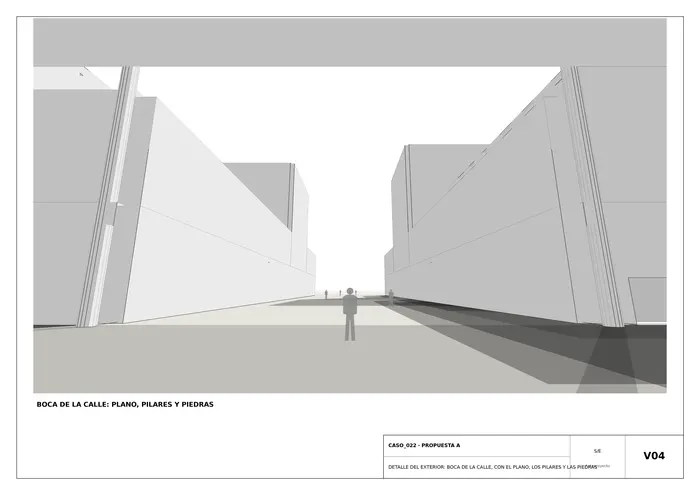
V04 · Detalle del exterior: boca de la calle, con el plano, los pilares y las piedras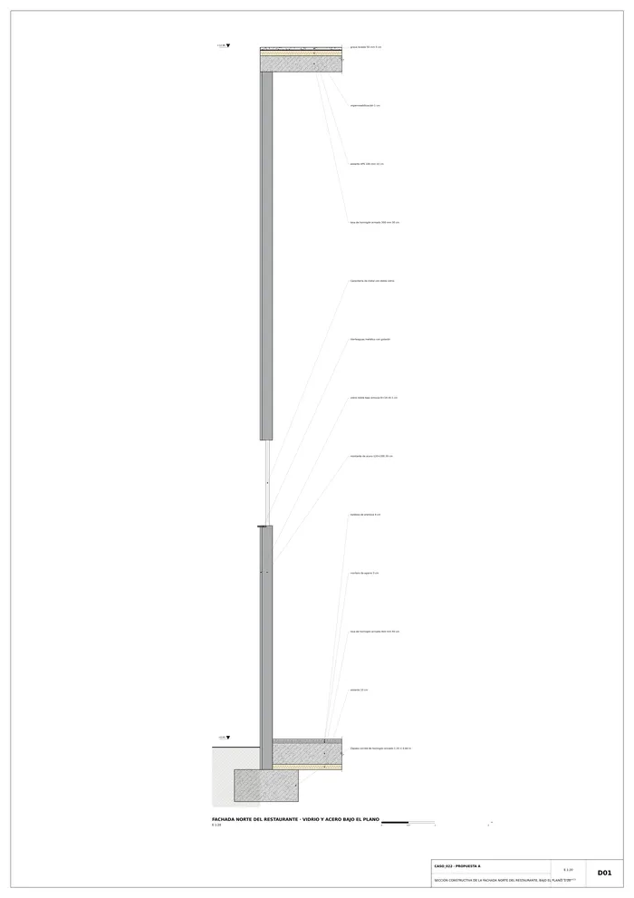
D01 · Sección constructiva de la fachada norte del restaurante, bajo el plano, 1:20Memoria de la propuesta tal como la entregó el sistema. Se han omitido las notas internas del proceso (revisiones, control de reconocimiento y referencias a archivos de trabajo).